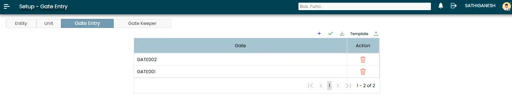

<div data-category="Gate Entry" data-title="Gate Entry" data-updated="January 23, 2026" data-contributors="RoadmapIT" data-breadcrumb="Home,Gate Entry,Gate Entry">
  <div class="page-content">
    <h5>Gate Entry</h5>
    <p>Gate entry is the process of recording and monitoring the movement of people, vehicles, and materials at the entrance of a facility or premises. This process is essential for ensuring security, managing access control, and maintaining accurate records of all entries and exits.</p>
    <p>This screen is used to define the gates of the organization.</p>

    <h5>Navigation path:</h5>
    <p class="fs-6">Supply Chain \ Gate Entry \ Setup \ Setup – Gate Entry \ Gate Entry</p>

    
    <ul style="list-style-type: none; align-content: center">
      <li class="mouse-icon">
        Click
        <i class="bi bi-plus fs-4 mx-2 text-primary"></i>
        to add
      </li>
      <li class="mouse-icon">Enter the Gate</li>
      <li class="mouse-icon">
        Click
        <i class="bi bi-check-lg fs-4 mx-1 text-success"></i>
        to Save
      </li>
      <li class="mouse-icon">
        Click
        <i class="bi bi-download fs-5 mx-1 text-muted"></i>
        button to download the details in preferred format such as CSV, HTML, PDF, and Excel
      </li>
      <li class="mouse-icon">Click Template button to download the template in excel format for mass upload</li>
      <li class="mouse-icon">
        Click
        <i class="bi bi-upload fs-5 mx-1 text-muted"></i>
        button to upload the template
      </li>
    </ul>
  </div>
</div>
